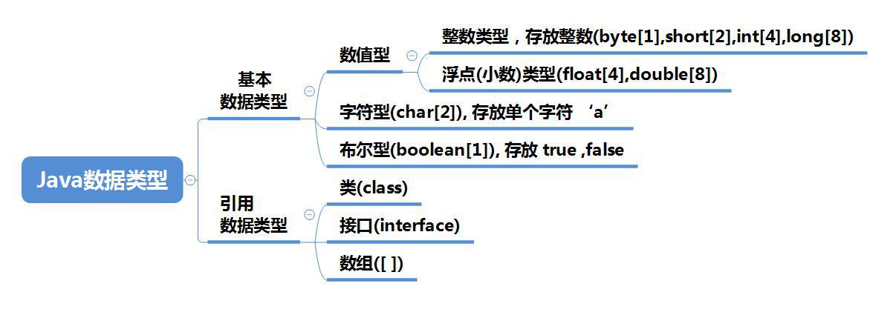

2.1 变量
- 变量是程序的基本组成单位
- 变量有三个基本要素：类型 + 名称 + 值
class Test {
public static void main(String []args){
int a = 1; // 定义一个变量，类型为int整形，名称a，值1
System.out.println(a); //输出a变量的值
}
}
- 变量表示内存中的一个存储区域，不同的变量，类型不同，占用的空间大小不同。例如
int4字节，double8字节 - 该区域有字节的变量名称和类型
- 变量必须先声明，后使用
- 该区域的数据可以在同一类型范围内不断变化
- 变量在同一个作用域内不能重名
2.2 +号的使用
- 当左右两边都是数值型时，则做加法运算
- 当左右两边有一方为字符串，则做拼接运算
- 运算顺序是从左到右
System.out.println(100 + 98); //198
System.out.println("100" + 98); //10098
System.out.println(100 + 3 + "hello"); //103hello
System.out.println("hello" + 100 + 3); //hello1003
2.3 数据类型
每一种数据都定义了明确的数据类型，在内存中分配了不同大小的内存空间(字节)。

2.3.1 整数类型
Java 的整数类型就是用于存放整数值的，比如12 , 30, 3456 等等
| 类型 | 占用存储空间 | 范围 |
|---|---|---|
| byte(字节) | 1字节 | -128-127 |
| short(短整型) | 2字节 | -(2^15^)-2^15^-1 |
| int(整形) | 4字节 | -(2^31^)-2^31^-1 |
| long(长整型) | 8字节 | -(2^63^)-2^63^-1 |
- Java各整数类型有固定的范围和字段长度，不受具体OS的影响，以保证Java程序的可移植性
- Java的整型常量默认为
int型，声明long型常量需后加l或L - Java程序中的变量常声明为
int型，除非不足以表示大数，才使用long - bit为计算机中的最小存储单位。byte为计算机中基本存储单元，1byte = 8 bit
2.3.2 浮点类型
Java 的浮点类型可以表示一个小数，比如123.4 ，7.8 ，0.12 等等
| 类型 | 占用存储空间 | 范围 |
|---|---|---|
| 单精度float | 4字节 | -3.403E38-3.403E38 |
| 双精度double | 8字节 | -1.798E308-1.798E308 |
- 关于浮点数在机器中存放形式的简单说明,浮点数=符号位+指数位+尾数位
- 尾数部分可能丢失，造成精度损失(小数都是近似值)。
- 与整数类型类似，Java浮点类型有固定的范围和字段长度，不受具体OS的影响
- Java浮点类型常量默认为double，声明float型，后面需要加
f或F - 通常情况下应该使用double型，因为比float型更精确
2.3.3 字符类型
字符类型可以表示单个字符,字符类型是char，char 是两个字节(可以存放汉字)，多个字符我们用字符串String(我们后面详细讲解String)
- 字符常量是用单引号
''括起来的单个字符，例如char c1 = 'a'; - Java中还允许使用转义字符
\来将其后面的字符转化为特殊字符型常量 - 在Java中，char的本质是一个整数，在输出时，是Unicode码对应的字符
- 可以直接将char赋一个整数，然后输出时，会按照对应的Unicode字符输出
- char类型是可以进行运算的，相当于一个整数，因为它都对应有Unicode码
字符和码值的对应关系是通过字符编码表决定的
- ASCII，一个字节表示，实际上一个字节可以表示256个字符，只用了128个
- Unicode，固定大小的编码，使用两个字节表示字符，字母和汉字统一都是占用两个字节
- utf-8，编码表，大小可变的编码，字母使用1个字节，汉字使用3个字节
- gbk，可以表示汉字，而且范围广，字母使用1个字节，汉字使用2个字节
- gb2312，可以表示汉字，gb2312<gk
- big5，繁体中文
2.3.4 布尔类型
- 布尔类型也叫Boolean类型， Boolean类型数据只允许取址true和false，无null
- Boolean类型占一个字节
- Boolean类型适于逻辑运算，一遍用于程序流程控制
2.4 基本数据类型转换
2.4.1 自动类型转换
当Java程序在进行赋值或者运算时，精度小的类型会自动转化为精度大的数据类型，这个就是自动类型转化
- 有多种类型的数据混合运算时，系统首先自动将所有数据转化成容量最大的那种数据类型，然后再进行计算
- 当我们把精度大的数据类型赋值给精度小的数据类型时，就会报错，反之就会进行自动类型转换
- （byte，short）和char之间不会相互自动转换
- byte，short，char他们可以计算，在计算时首先转换为int类型
- Boolean不参与转化
- 表达式结果的类型自动提升为操作数中最大的类型
2.4.2 强制类型转换
自动类型转换的逆过程，将容量大的数据类型转换为容量小的数据类型。使用时要加上强制转换符( )，但可能造成精度降低或溢出,格外要注意。
int i = (int)1.9;
int j = 100;
byte b1 = (byte)j
2.4.3 基本数据类型和String 类型的转换
在程序开发中，我们经常要将基本数据类型转成String类型，或者将String类转成基本数据类型。
- 基本类型转String类型
将基本类型的值 + “”即可
int n1 = 100;
String str1 = n1 + ""
- String类型转基本数据类型
通过基本类型的包装类调用praseXX方法即可
Integer.parseInt("123");
Boolean.parseBoolean("true");
Float.parseFloat("123.45");
- 在将String 类型转成基本数据类型时，要确保String类型可以转化成有效的数据 ，比如我们可以把"123" , 转成一个整数，但是不能把"hello" 转成一个整数
- 如果格式不正确，就会抛出异常，程序就会终止，
2.5 修饰符
2.5.1 访问控制修饰符
Java语言提供了很多修饰符，主要分为以下两类：
- 访问修饰符
- 非访问修饰符
修饰符用来定义类、方法或者变量，通常放在语句的最前端。
public class ClassName {
// ...
}
private boolean myFlag;
static final double weeks = 9.5;
protected static final int BOXWIDTH = 42;
public static void main(String[] arguments) {
// 方法体
}
- default (即默认，什么也不写）: 在同一包内可见，不使用任何修饰符。使用对象：类、接口、变量、方法。
- private : 在同一类内可见。使用对象：变量、方法。 注意：不能修饰类（外部类）
私有访问修饰符是最严格的访问级别，所以被声明为 private 的方法、变量和构造方法只能被所属类访问，并且类和接口不能声明为 private。声明为私有访问类型的变量只能通过类中公共的 getter 方法被外部类访问。Private 访问修饰符的使用主要用来隐藏类的实现细节和保护类的数据。
- public : 对所有类可见。使用对象：类、接口、变量、方法
被声明为 public 的类、方法、构造方法和接口能够被任何其他类访问。如果几个相互访问的 public 类分布在不同的包中，则需要导入相应 public 类所在的包。由于类的继承性，类所有的公有方法和变量都能被其子类继承。
- protected : 对同一包内的类和所有子类可见。使用对象：变量、方法。 注意：不能修饰类（外部类）。
- 子类与基类在同一包中：被声明为 protected 的变量、方法和构造器能被同一个包中的任何其他类访问；
- 子类与基类不在同一包中：那么在子类中，子类实例可以访问其从基类继承而来的 protected 方法，而不能访问基类实例的protected方法。
2.5.2 非访问修饰符
为了实现一些其他的功能，Java 也提供了许多非访问修饰符。
- static 修饰符，用来修饰类方法和类变量。
- 静态变量：static 关键字用来声明独立于对象的静态变量，无论一个类实例化多少对象，它的静态变量只有一份拷贝。 静态变量也被称为类变量。局部变量不能被声明为 static 变量。
- 静态方法：static 关键字用来声明独立于对象的静态方法。静态方法不能使用类的非静态变量。静态方法从参数列表得到数据，然后计算这些数据。
- final 修饰符，用来修饰类、方法和变量，final 修饰的类不能够被继承，修饰的方法不能被继承类重新定义，修饰的变量为常量，是不可修改的。
- final 变量：final 表示"最后的、最终的"含义，变量一旦赋值后，不能被重新赋值。被 final 修饰的实例变量必须显式指定初始值。final 修饰符通常和 static 修饰符一起使用来创建类常量。
- final 方法：父类中的 final 方法可以被子类继承，但是不能被子类重写。声明 final 方法的主要目的是防止该方法的内容被修改。
- final 类：final 类不能被继承，没有类能够继承 final 类的任何特性。
- abstract 修饰符，用来创建抽象类和抽象方法。
- 抽象类：抽象类不能用来实例化对象，声明抽象类的唯一目的是为了将来对该类进行扩充。一个类不能同时被 abstract 和 final 修饰。如果一个类包含抽象方法，那么该类一定要声明为抽象类，否则将出现编译错误。抽象类可以包含抽象方法和非抽象方法。
- 抽象方法：抽象方法是一种没有任何实现的方法，该方法的具体实现由子类提供。抽象方法不能被声明成 final 和 static。任何继承抽象类的子类必须实现父类的所有抽象方法，除非该子类也是抽象类。如果一个类包含若干个抽象方法，那么该类必须声明为抽象类。抽象类可以不包含抽象方法。抽象方法的声明以分号结尾，例如：public abstract sample();
- synchronized 和 volatile 修饰符，主要用于线程的编程。synchronized 关键字声明的方法同一时间只能被一个线程访问。synchronized 修饰符可以应用于四个访问修饰符。
- transient 修饰符：序列化的对象包含被 transient 修饰的实例变量时，java 虚拟机(JVM)跳过该特定的变量。该修饰符包含在定义变量的语句中，用来预处理类和变量的数据类型。
- volatile 修饰符：volatile 修饰的成员变量在每次被线程访问时，都强制从共享内存中重新读取该成员变量的值。而且，当成员变量发生变化时，会强制线程将变化值回写到共享内存。这样在任何时刻，两个不同的线程总是看到某个成员变量的同一个值。